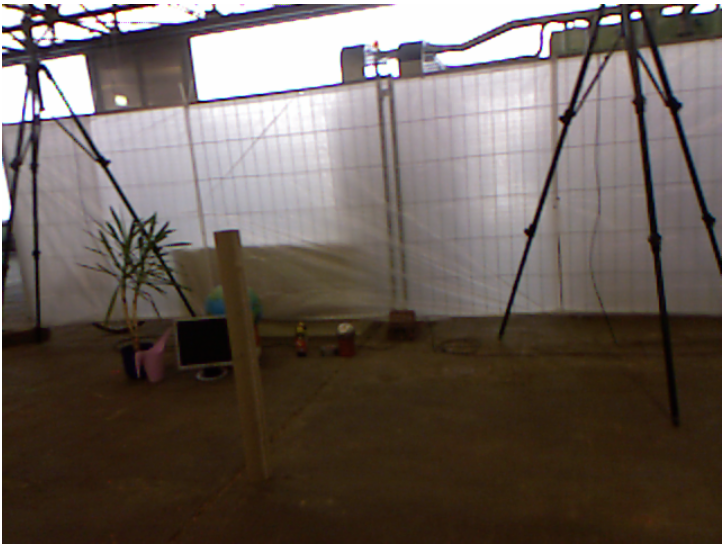
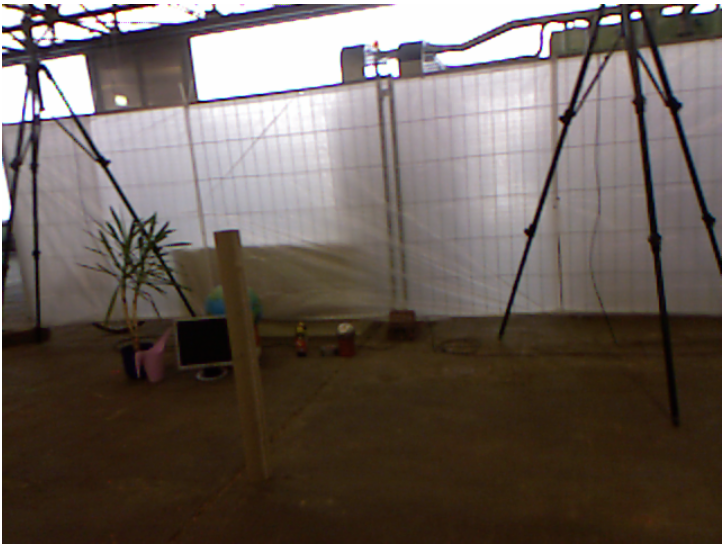

Visual Odometry
Team VOD: Akhilesh Aji, Bhavya Bahl, Ashwin JeyaseelanFall 2019 CS 6476 Computer Vision: Class Project
Georgia Tech
Abstract
We will develop a visual odometry system that tracks the pose of the camera throughout a video sequence. This involves elements of feature detection and matching, image rotation and translation, and consensus gathering to build a complex system.Teaser figure
A figure that conveys the main idea behind the project or the main application being addressed.
Introduction
One of the most fundamental algorithms for mobile robotics is Simultaneous Localization And Mapping (SLAM). SLAM is used by a robot to discern where in the world it is, and build a map around itself. In this project we plan on replicating a crucial component of SLAM called Visual Odometry(VO). VO is the process of using a camera to verify the position of a robot. This can be very useful as the redundancy in odometry helps to reduce drift in the system as error slowly builds up.The system we will be developing will take in an RGB-D video feed generated by a kinect and will plot the movement of the camera around the world. Our system will tag each frame of the video with the (x,y,z, unit quaternion) of the camera when it took this image based on the predicted position of the previous image and transformation between the two images.
This problem is particularly interesting because it combines many of the tools we have discussed in class in a layered fashion. Edges must be extracted to help define features for SIFT to extract and match followed by finding the homography matrix to understand the relationship between each of the images. Each level of the process will require that the previous step was done with as little noise seeping through as possible. This means that there will always be additional features we can implement to reduce noise or allow the system to run faster. In addition visual odometry as a subject is still under research. As robots are becoming more ubiquitous and cheap they use fewer and cheaper sensors. As a result, simple cameras are doing the job that previously was accomplished with other sensors such as lidar. While our primary goal is to get visual odometry working with color and depth information we will compare its performance with that of a monocular system which is currently on the cutting edge of research.
Approach
Describe very clearly and systematically your approach to solve the problem. Tell us exactly what existing implementations you used to build your system. Tell us what obstacles you faced and how you addressed them. Justify any design choices or judgment calls you made in your approach.Experiments and results
Upon implementing our visual odometry algorithm, we will assess its performance on several unseen datasets by comparing the ground truth labels with the labels our system generates at each frame. Success in our task will be determined by a low error between our predicted poses and the ground truth poses.We plan to implement the core algorithm ourselves while using libraries such as numpy and PyTorch to handle the computations. For feature detection, (which we utilize when comparing pairs of frames to determine the translation between them), we plan on using our own implementation of the SIFT algorithm.
The datasets we will be using come from the computer vision group of the Technical University of Munich Department of Informatics. They provide several videos with rgb-d data as well as ground truth camera pose information. While implementing and tuning our dataset, we will use sequence freiburg1_floor, which is a video going over the wooden floor of an office as well as reiburg2_large_no_loop. We will then test and analyze performance against the other datasets that have been made available.
 

To evaluate our approach, we will compare our frame position tags to the ground truth positions provided in the dataset using the root mean squared error over multiple trials. If there are any major outliers in the dataset, we will additionally use other more robust metrics such as the median error or average error without the square. A common issue that we might face with our experiments is drift. Since we’re incrementally computing the pose after each frame, any errors we make will affect the pose calculations in the next frame and so on. These errors can accumulate and cause our overall estimated path to significantly differ from the actual path. If this turns out to be an issue with our dataset, then we will look into methods to combat this such as ‘sliding window adjustment’, in which we group a window of previous frames and backpropagate a measure of error such as RMSE to correct and update previous pose calculations.
A success for our project would not only to have a fully working implementation of a visual odometry algorithm, but to find areas of improvement for our algorithm and to develop an understanding of the reasoning behind those improvements. Ultimately we aim to develop an algorithm that can predict the poses of the camera throughout a video sequence and to understand and build upon areas of potential improvement.